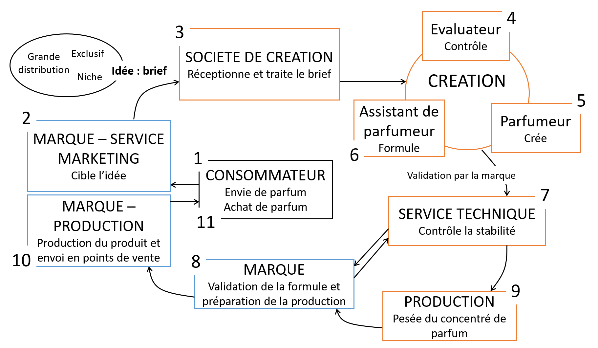
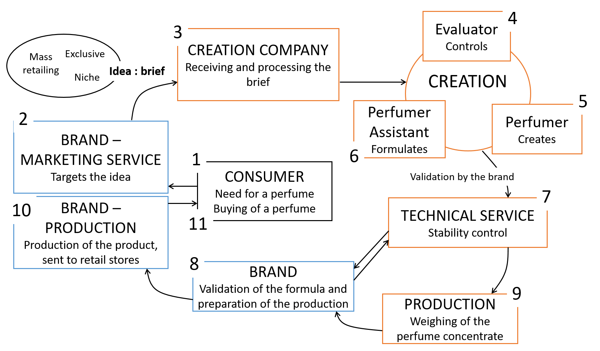
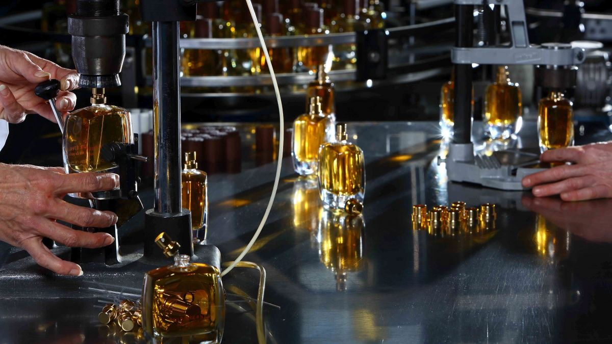

Notre site internet utilise des cookies à des fins de statistiques, de perfomances et de sécurité. Ces données anonymes nous permettent de vous offrir une expérience de navigation optimale. Vous pouvez toutefois désactiver les cookies dans les paramètres de votre navigateur.
Our website is using cookies for statistics, performance and security. These anonymous data allow us to give you an optimal navigation experience. You still can disable the cookies in your navigator’s parameters.
COMMENT NOS PARFUMS SONT-ILS CRÉÉS ? HOW PERFUMES ARE MADE ?
Découvrez comment sont faits les parfums que nous achetons chaque jour, de l’idée marketing à la vente, en passant par la création et la fabrication. Discover how our everyday perfumes are made, from the marketing idea to the selling, passing by creation and production.
Les matières premières détaillées dans ScenTree constituent l’alphabet du parfumeur. Un alphabet est utilisé pour écrire des mots. Les mots sont utilisés pour raconter une histoire. Cette histoire est couramment appelée « parfum ». Le parfum résulte donc de l’expression de la société qui le commercialise et de celle du créateur – le parfumeur – utilisant cet alphabet, dans le but de raconter une histoire. Le parfumeur doit maîtriser son alphabet avant toute création. Un parfum est le résultat du travail d’une équipe.
De l’idée au produit fini, du client au consommateur, détaillons chronologiquement tous les aspects de la création d’un parfum.
The raw materials detailed in ScenTree make up the perfumer's alphabet. An alphabet is used to write words. Words are used to tell a story. This story is commonly called "perfume". The perfume is the result of the expression of the company that markets it and the expression of the creator - the perfumer - using this alphabet to tell a story. The perfumer must master his alphabet before any creation. A perfume is the result of the work of a team.
From the idea to the finished product, from the client to the consumer, let's chronologically detail every aspect of the creation of a perfume.
 
-
Le consommateur au cœur des projets The customer as a target
Tout commence par le besoin d’un consommateur. Le client souhaite acheter un parfum qui lui correspond, qui lui plait. Il peut vouloir respecter les tendances, ou s’affirmer à travers une originalité olfactive. Ce sont les envies du consommateur que les marques souhaitent cibler. It all starts with the consumer’s need. The customer wants to buy a perfume that suits him, that he likes. He may want to respect trends, or assert himself through olfactory originality. It is the consumer's desires that the brands wish to target.
-
Une idée, un type de parfum et un brief pour orienter la création One idea, one type of perfume and one brief to guide creation
Lorsqu’une marque souhaite sortir un nouveau parfum, plusieurs choix s’offre à elle. Il est ainsi très important de prendre en compte qu'il existe plusieurs types de processus de création, ces derniers étant principalement dépendants du type de parfum que le consommateur recherche. La liste suivante détaille les 5 types de parfums existant à ce jour sur le marché : When a brand wants to release a new fragrance, there are several choices. It is therefore very important to take into account that there are several types of creation process, which are mainly depending on the type of perfume that the consumer is looking for. The following list details the 5 types of perfume existing on the market today:
-
Les parfums dits de "grande distribution": "Mass distribution" perfumes :
Ce sont des parfums respectant la tendance, vendu mondialement et en très grande quantité. Ces parfums se retrouvent dans les grandes enseignes de distribution spécialisées que nous connaissons tous. Appuyés par de grosses campagnes publicitaires, ces flacons sont généralement les plus portés et c'est la voie de distribution la plus courante. La concurrence y est très rude et les enjeux très important. They are trendy perfumes, sold worldwide and in very large quantities. These fragrances can be found in the large specialized distribution chains that we all know. Supported by large advertising campaigns, these bottles are generally the most worn and it is the most common way of distribution. The competition is very tough and the stakes are very high.
-
Les parfums dits de "mass market": "Mass market" perfumes :
Ce sont des parfums crées dans des volumes très importants, possédant très peu, voir pas de marketing, un flacon standard, un packaging généralement sobre. Ces produits se retrouvent généralement dans les rayons de nos supermarchés. Leurs prix sont généralement bas, mais la qualité est cependant présente au rendez-vous. These are perfumes created in very large quantities, with very poor, if any marketing, a classical bottle and generally sober packaging. These products are generally found on the shelves of our supermarkets. Their prices are generally low, but quality is there.
-
Les parfums dits de "niche" ou "parfums confidentiels": "Niche" or "confidential" perfumes :
Ces parfums sont généralement vendu en plus faible quantité, sont très peu soutenu par le marketing mais ils témoignent souvent d’une volonté artistique particulière. Le prix de ces flacons sont généralement supérieurs aux catégories précèdentes car les marques se positionnant ainsi sont généralement indépendantes, produissent peu de volume et se concentre sur le contenu du flacon, pas sur le contenant ou le marketing. C'est généralement dans cette catégorie que se situent les parfums les plus originaux. These fragrances are generally sold in smaller quantities, have very poor marketing support, but they often show a particular artistic will. The price of these bottles is generally higher than the previous categories because the brands positioning themselves in this way are generally independent, producing poor volumes and focus on the content of the perfume, and not on the packaging or marketing. It is generally in this category that the most original fragrances are found.
-
Les parfums dits "exclusifs" : "Exclusive" perfumes :
Ces parfums sont généralement crées par les sociétés qui commercialise des parfums dans la première catégorie listée. En parralèle des grandes productions, ces sociétés créent généralement une gamme plus confidentielle, se rapprochant du modèle de niche afin de toucher une clientèle différentes. Leur positionnement sont généralement très haut de gamme. These fragrances are generally created by companies that market fragrances in the first category listed. Alongside large productions, these companies generally create a more confidential product range, approaching the niche model in order to reach different clients. Their positioning is generally very high-end.
-
Les parfums dits "sur-mesure" : "Customed" perfumes :
Ces parfums sont généralement créés en un nombre extrèmement limité de produit. Ils sont créés pour une seule personne ou pour une société souhaitant se créer une identité olfactive. La création et les prix de vente de ces produits fluctuent énormément en fonction du nombre d'exemplaire, de la demande, du flacon etc.. et peuvent atteindre des sommes records. These fragrances production is usually very limited. They are created for a single person or for a company wishing to create an olfactory identity for itself. Creation and prices can highly fluctuate, according to the number of copies produced, the demand, the bottle etc., and can reach very high amounts.
Quel que soit l’objectif de la marque, l’idée du thème du parfum résulte d’une étude de marché. Cette étude peut être réalisée dans le but de cibler les notes olfactives, les plus tendance, celles qui n’ont encore jamais été senties, ou encore celles qui vont toucher une cible précise. L’idée résulte de l’interaction entre une marque et un consommateur.
Une fois l’idée formulée, elle est mise en forme dans un cahier des charges, aussi appelé « brief », dont l’objectif est d’énoncer clairement, ou de suggérer le thème du parfum. Le « brief » peut alors prendre plusieurs formes. Il peut être exprimé avec un ou plusieurs mots, images, musiques, vidéos, œuvres d’art, avec un degré de subjectivité voulu par le service marketing de la marque. C’est le « brief » qui va orienter et inspirer le parfumeur. Whatever the brand's objective, the idea for the theme of the fragrance is the result of market study. This study can be carried out with the aim of targeting olfactory notes, the trendiest ones, those that have never been smelled before, or those that are going to hit a specific target. The idea results from the interaction between a brand and a consumer.
Once the idea has been formulated, it is put into shape in a specification, also called 'brief', whose purpose is to clearly state, or suggest, the theme of the fragrance. The "brief" can then take several forms. It can be expressed with one or more words, images, music, videos, artwork, with a degree of subjectivity desired by the brand's marketing department. The "brief" will guide and inspire the perfumer.Ce cahier des charges peut être soumis à différents types de créateurs. Il peut s’agir d’une société regroupant plusieurs parfumeurs, auquel cas les marques ont pour habitude de soumettre un même « brief » à plusieurs sociétés, les mettant ainsi en concurrence pour le même parfum. Le cahier des charges peut aussi être attribué à une société indépendante, comportant le plus souvent un seul parfumeur, qui travaille sans concurrence sur cette création. Il peut enfin être soumis à un parfumeur dit « maison », ne travaillant que pour la marque en question, et créant tous les parfums de cette marque. Seuls quelques grandes marques disposent d’un parfumeur « maison », souvent synonyme de prestige. On note enfin de nombreux parfumeurs indépendants, créant eux-mêmes leurs parfums selon leurs inspirations, sans cahier des charges extérieur. These specifications can be submitted to different types of creators. It can be a company with several perfumers, in which case the brands usually submit the same brief to several companies, putting them in competition for the same fragrance. The brief can also be awarded to an independent company, usually with only one perfumer, who works without competition on the creation. Finally, it can be submitted to a so-called "in-house" perfumer, working only for the brand, and creating all the fragrances of that brand. Only a few major brands have an "in-house" perfumer, often synonymous with prestige. Finally, there are many independent perfumers, creating their own fragrances according to their own inspiration, without any outside specifications.
-
-
La réception du brief par la société de création Reception of the brief by the creation company
Prenons le cas d’un parfum sorti par une grande marque, dont le « brief » est soumis à plusieurs sociétés de création de parfum. Ces sociétés peuvent inclure plusieurs dizaines de parfumeurs. Le cahier des charges est réceptionné par le service commercial de la société, chargé d’entretenir une relation avec la marque, et d’en traiter la demande. Il est transmis au service d’évaluation de l’entreprise. Ce service, composé d’évaluateurs, est chargé de faire correspondre le travail du parfumeur, en ciblant la demande olfactive du client. Let's take the case of a perfume released by a major brand, whose "brief" is submitted to several perfume creation companies. These companies may include several dozen perfumers. The specifications are received by the company's sales department, in charge of maintaining a relationship with the brand and processing the application. It is forwarded to the company's evaluation department. This department, made up of evaluators, is in charge of matching the perfumer's work, targeting the client's olfactory demand.
-
L’évaluateur, l’intermédiaire entre client et création The evaluator, between customer and creation
L’évaluateur a un rôle d’interprétation du « brief » et de conseil lors de la création du parfum. Parfumeurs (ils peuvent être plusieurs à travailler en équipe ou en concurrence sur un même parfum, au sein d’une même société) et évaluateurs (un ou plusieurs là aussi) travaillent en équipe d’un commun accord autour d’un cahier des charges donné, et se lancent alors dans la création et l’évaluation du parfum demandé par le client. The evaluator's role is to interpret the "brief" and provide advice during the creation of the perfume.. Perfumers (there may be several of them working as a team or in competition on the same perfume, within the same company) and evaluators (one or more of them too) work as a team by mutual agreement around a given brief, and then start the creation and evaluation of the perfume requested by the client.
-
Le parfumeur, le créateur The perfumer, the creator
Il n’existe pas de méthode de création type. Chaque parfumeur crée à sa manière. Certains travaillent autour de matières premières naturelles, en faisant graviter des matières premières synthétiques autour d’elles pour leur donner des facettes précises ; d’autres traduisent directement leur interprétation du « brief » en matières premières. Le choix des matières premières résulte d’une conviction intime du parfumeur, guidée par l’évaluateur. La création d’un parfum résulte alors d’échanges successifs. Le parfumeur entre sur un logiciel une formule utilisant plusieurs matières premières aux dilutions et proportions souhaitées. Lors de la formulation, une contrainte de réglementation doit être respectée. Selon le type de produit dans lequel le parfum sera appliqué, les allergènes et les composés réglementés par l’IFRA ne doivent pas dépasser certains taux d’utilisation (voir notre article sur les allergènes en parfumerie). There is no standard creation method. Each perfumer creates in his own way. Some work around natural raw materials, adding synthetic raw materials to give them precise facets; others translate their interpretation of the "brief" directly into raw materials. The choice of raw materials is the result of an intimate conviction on the part of the perfumer, guided by the evaluator. The creation of a perfume is then the result of successive exchanges. The perfumer enters on a software program a formula using several raw materials in the desired dilutions and proportions. During formulation, a regulatory constraint must be respected. Depending on the type of product in which the perfume will be applied, the allergens and compounds regulated by the IFRA must not exceed certain amounts of use (see article about perfume allergens).
-
L’assistant de parfumeur et l’évaluation du parfum The perfumer assistant and the perfume evaluation
Cette formule est reçue par un assistant de parfumeur, chargé de peser une à une les matières premières souhaitées en laboratoire. L’échantillon est apporté au parfumeur, évalué par ce dernier, puis la formule est modifiée et pesée à nouveau. Lorsque le parfumeur souhaite avoir un avis de l’évaluateur, ceux-ci se réunissent et décident ensemble des modifications à apporter.
Lorsqu’un ou plusieurs échantillons sont jugés satisfaisants par le parfumeur et l’évaluateur, ils sont soumis au client lors d’une réunion ayant lieu dans les locaux de l’entreprise créatrice. Une telle soumission peut intervenir au bout de quelques essais seulement, ou après des centaines, voire milliers d’essais réalisés. Tout dépend également de la limite de temps fixée par le client pour cette création. Le client donne alors son avis sur la fragrance, en validant un essai, ou en demandant un « retravail » de la formule. Dans le cas d’un retravail, les échanges successifs entre création, pesée et évaluation continuent. This formula is received by a perfumer assistant, in charge of weighing the desired raw materials one by one in the laboratory. The sample is taken to the perfumer, evaluated by the perfumer, then the formula is modified and weighed again. When the perfumer wishes to have an opinion from the evaluator, they meet and decide together on the modifications to be made. When one or more samples are deemed satisfactory by the perfumer and the evaluator, they are submitted to the client at a meeting held in the creative company. Such a submission may occur after only a few tests, or after hundreds or even thousands of tests have been carried out. It all depends on the deadline fixed by the client for this creation. The client gives its opinion on the fragrance, validating a trial or asking for a "rework" of the formula. In the case of reworking, the successive exchanges between creation, weighing and evaluation continue. -
La stabilité du parfum, un enjeu essentiel Perfume stability, a crucial issue
Lorsqu’un essai est validé par le client, la formule est soumise à un ensemble de tests de stabilité. Ceux-ci consistent à soumettre le parfum à diverses conditions de température, de lumière, dans sa base ou non, pour y détecter d’éventuels changements de couleur, d’odeur ou d’apparence. Dans le cas d’une instabilité jugée inacceptable, le parfum est « retravaillé », en traitant le problème à la racine : en remplaçant la (ou les) matière(s) première(s) à l’origine de l’instabilité. Une fois la formule corrigée, de nouveaux tests sont réalisés et le parfum est validé pour envoi au client. Ce dernier peut demander des dernières modifications dans le cas où une instabilité est détectée en interne de sa société. When a trial is validated by the client, the formula is submitted to a pool of stability tests. These consist in submitting the perfume to various conditions of temperature, light, in its base or not, to detect possible changes in color, odor or appearance. In the case of instability that is found as unacceptable, the fragrance is "reworked", treating the problem at its root: replacing the raw material(s) causing the instability. Once the formula has been corrected, new tests are carried out and the fragrance is validated for sending to the client. The latter may request final modifications in the event that instability is detected within his company.
-
La validation par le client Validation by the customer
Après réception de chaque essai créé par chaque société de création, le client choisi le parfum qui deviendra celui trouvé dans les rayons de nos parfumeries. After receiving every trial, created by each creation companies, the client chooses the one that will be found in the shelves of our perfume shops.
-
Production du concentré de parfum Production of the perfume concentrate
La société ayant créé le parfum sélectionné est en charge de lancer le « concentré de parfum » (correspondant au parfum pur, non dilué dans sa base) en production. La production d’un concentré de parfum se fait en y mélangeant les matières premières. The creation company is in charge of launching the "perfume concentrate" (corresponding to the pure perfume, undiluted in its base) in production. The production of a perfume concentrate is done by mixing the raw materials.
-
Production du parfum Perfume production
Il s’en suit l’envoi du concentré dans l’usine de production, appartenant à la marque, une période de « maturation » de ce concentré (et de « macération » dans le cas d’un parfum alcoolique), et la production du produit fini sur les chaînes de production de l’usine de la marque. Le parfum est conditionné dans son packaging, préalablement conçu en interne de la société, ou par un sous-traitant, et envoyé dans les points de vente dédiés. This is followed by the sending of the concentrate to the production plant, belonging to the brand, a period of "maturation" of this concentrate (and "maceration" in the case of an alcoholic perfume), and the production of the finished product on the brand’s production lines. The perfume is packaged in its packaging, previously designed in-house or by a subcontractor, and sent to dedicated sales outlets.
-
L’achat du parfum Perfume production
Tout se termine par l’achat du parfum par le consommateur. La boucle est bouclée. It all ends with the client, buying the product. It’s come full circle.
En somme, la création d’un parfum résulte de plusieurs étapes, et demande de nombreuses compétences, pour lesquelles le travail d’équipe est primordial. Tournant autour du consommateur, le parfum est au départ une idée, sublimée par la vision artistique d’un parfumeur, lui-même guidé par l’évaluateur, et aidé par l’assistant de parfumeur. La création d’un parfum est l’alliance d’une volonté marketing et artistique, tout en respectant les contraintes de stabilité, de réglementation, de coût et de temps imposées. L’art de la parfumerie réside donc dans la commercialisation d’une œuvre harmonieuse, contournant toute contrainte. Ainsi, le parfum est plus que jamais un produit de luxe, de raffinement et d’excellence. In short, the creation of a perfume is the result of several stages, and requires many skills, for which teamwork is essential. Revolving around the consumer, the perfume is initially an idea, sublimated by the artistic vision of a perfumer, himself guided by the evaluator, and helped by the perfumer assistant. The creation of a perfume is the alliance of a marketing and artistic will, while respecting the constraints of stability, regulation, cost and time imposed. The art of perfumery therefore lies in the marketing of a harmonious work, bypassing all constraints. Thus, more than ever, perfume is a product of luxury, refinement and excellence.
Découvrez nos autres articles : Get to read our other articles :